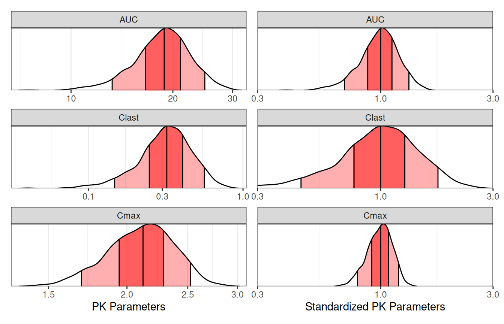
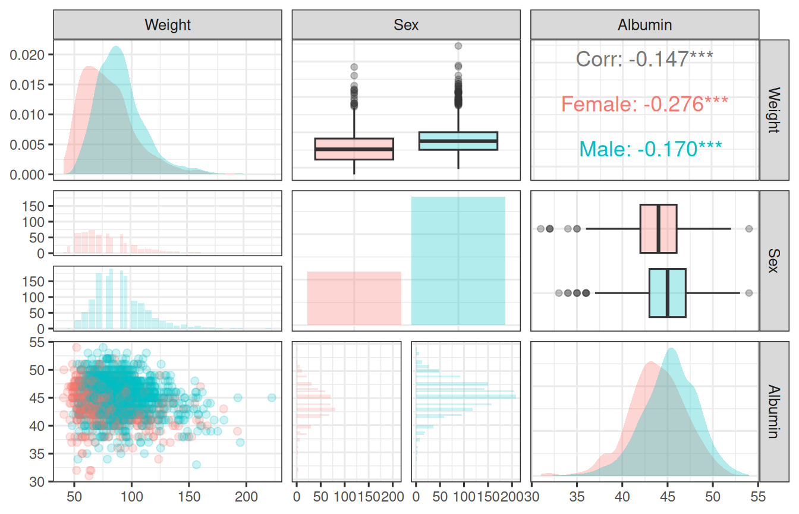
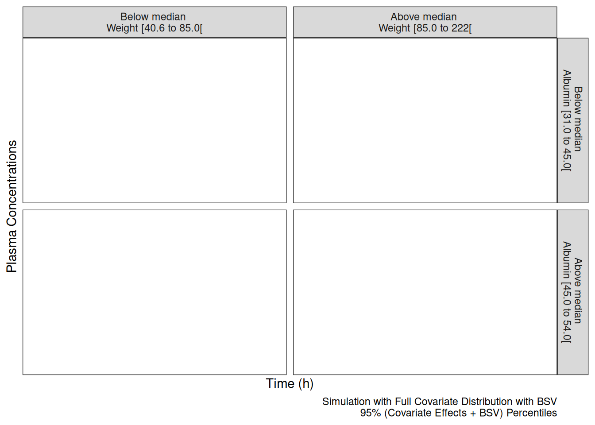

PK Model: Assessing the Impact of Joint Covariates Distributions and BSV on Drug Exposure
Source:vignettes/PK_Example_full.Rmd
PK_Example_full.RmdHere we illustrate the full distribution of covariates + BSV approach. A two-compartment pharmacokinetic (PK) model defined with ordinary differential equations (ODEs) is used. Covariates Weight, Albumin and Sex had effects on the Clearance (CL) model parameter while Weight and Sex had effects on the Volume of distribution (V) model parameter. For simplicity, there were no included covariates effects on other PK parameters such as peripheral clearance or volume. The approach is general and can be easily extended to any other ODEs model with multiple covariate effects on multiple model parameters.
Specifying a PK Model using mrgsolve
codepkmodelcov <- '
$PARAM @annotated
KA : 0.5 : Absorption rate constant Ka (1/h)
CL : 4 : Clearance CL (L/h)
V : 10 : Central volume Vc (L)
Vp : 50 : Peripheral volume Vp (L)
Qp : 10 : Intercompartmental clearance Q (L/h)
CLALB : -0.8 : Ablumin on CL (ref. 45 g/L)
CLSEX : 0.2 : Sex on CL (ref. Female)
CLWT : 1 : Weight on CL (ref. 85 kg)
VSEX : 0.07 : Sex on Vc (ref. Female)
VWT : 1 : Weight on Vc (ref. 85 kg)
$PARAM @annotated // reference values for covariate
WT : 85 : Weight (kg)
SEX : 0 : Sex (0=Female, 1=Male)
ALB : 45 : Albumin (g/L)
$PKMODEL cmt="GUT CENT PER", depot=TRUE, trans=11
$MAIN
double CLi = CL *
pow((ALB/45.0), CLALB)*
(SEX == 1.0 ? (1.0+CLSEX) : 1.0)*
pow((WT/85.0), CLWT)*exp(nCL);
double V2i = V *
(SEX == 1.0 ? (1.0+VSEX) : 1.0)*
pow((WT/85.0), VWT)*exp(nVC);
double KAi = KA;
double V3i = Vp *pow((WT/85.0), 1);
double Qi = Qp *pow((WT/85.0), 0.75);
$OMEGA @annotated @block
nCL : 0.09 : ETA on CL
nVC : 0.01 0.09 : ETA on Vc
$TABLE
double CP = CENT/V2i;
$CAPTURE CP KAi CLi V2i V3i Qi WT SEX ALB
'
modcovsim <- mcode("codepkmodelcov", codepkmodelcov)
partab <- setDT(modcovsim@annot$data)[block=="PARAM", .(name, descr, unit)]
partab <- merge(partab, melt(setDT(modcovsim@param@data), meas=patterns("*"), var="name"))
knitr::kable(partab)| name | descr | unit | value |
|---|---|---|---|
| ALB | Albumin | g/L | 45.00 |
| CL | Clearance CL | L/h | 4.00 |
| CLALB | Ablumin on CL | ref. 45 g/L | -0.80 |
| CLSEX | Sex on CL | ref. Female | 0.20 |
| CLWT | Weight on CL | ref. 85 kg | 1.00 |
| KA | Absorption rate constant Ka | 1/h | 0.50 |
| Qp | Intercompartmental clearance Q | L/h | 10.00 |
| SEX | Sex | 0=Female, 1=Male | 0.00 |
| V | Central volume Vc | L | 10.00 |
| VSEX | Sex on Vc | ref. Female | 0.07 |
| VWT | Weight on Vc | ref. 85 kg | 1.00 |
| Vp | Peripheral volume Vp | L | 50.00 |
| WT | Weight | kg | 85.00 |
Simulate a Reference Subjects with BSV
We simulate the reference subject having the reference covariate
values defined in the model which are:
Weight = 85 kg, Sex = Female and Albumin = 45 g/L. We also keep the
between subject variability (BSV) to illustrate its effects on the
concentration-time profiles on linear and log linear scales.
idata <- data.table(ID=1:nbsvsubjects, WT=85, SEX=0, ALB=45)
ev1 <- ev(time = 0, amt = 100, cmt = 1)
data.dose <- ev(ev1)
data.dose <- setDT(as.data.frame(data.dose))
data.all <- data.table(idata, data.dose)
outputsim <- modcovsim %>%
data_set(data.all) %>%
mrgsim(end = 24, delta = 0.25) %>%
as.data.frame %>%
as.data.table
outputsim$SEX <- factor(outputsim$SEX, labels="Female")
# Only plot a random sample of N=500
set.seed(678549)
plotdata <- outputsim[ID %in% sample(unique(ID), 500)]
# New facet label names for dose variable
albumin.labs <- c("albumin: 45 ng/mL")
names(albumin.labs) <- c("45")
wt.labs <- c("weight: 85 kg")
names(wt.labs) <- c("85")
p1 <- ggplot(plotdata, aes(time, CP, group = ID)) +
geom_line(alpha = 0.2, size = 0.1) +
facet_grid(~ WT + ALB + SEX,
labeller = labeller(ALB = albumin.labs,
WT = wt.labs)) +
labs(y = "Plasma Concentrations", x = "Time (h)")
p2 <- ggplot(plotdata, aes(time, CP, group = ID)) +
geom_line(alpha = 0.2, size = 0.1) +
facet_grid(~ WT + ALB + SEX,
labeller = labeller(ALB = albumin.labs,
WT = wt.labs)) +
scale_y_log10() +
labs(y = "Plasma~Concentrations\n(logarithmic scale)", x = "Time (h)")
egg::ggarrange(p1, p2, ncol = 2)
Compute PK Parameters, Plot and Summarize BSV
In this section we compute the PK parameters of interest, provide a
plot of the parameters as well as of the standardized ones. We also
summarize and report the BSV as ranges of 50 and 90% of patients for
each PK parameter. Later on we might choose to include these ranges in
the coveffectsplot or not.
derive.exposure <- function(time, CP) {
n <- length(time)
x <- c(
Cmax = max(CP),
Clast = CP[n],
AUC = sum(diff(time) * (CP[-1] + CP[-n])) / 2
)
data.table(paramname=names(x), paramvalue=x)
}
refbsv <- outputsim[, derive.exposure(time, CP), by=.(ID, WT, SEX, ALB)]
p3 <- ggplot(refbsv, aes(
x = paramvalue,
y = paramname,
fill = factor(..quantile..),
height = ..ndensity..)) +
facet_wrap(~ paramname, scales="free", ncol=1) +
stat_density_ridges(
geom="density_ridges_gradient", calc_ecdf=TRUE,
quantile_lines=TRUE, rel_min_height=0.001, scale=0.9,
quantiles=c(0.05, 0.25, 0.5, 0.75, 0.95)) +
scale_fill_manual(
name = "Probability",
values = c("white", "#FF000050", "#FF0000A0", "#FF0000A0", "#FF000050", "white"),
labels = c("(0, 0.05]", "(0.05, 0.25]",
"(0.25, 0.5]", "(0.5, 0.75]",
"(0.75, 0.95]", "(0.95, 1]")) +
theme_bw() +
theme(
legend.position = "none",
axis.text.y = element_blank(),
axis.ticks.y = element_blank(),
axis.title.y = element_blank()) +
labs(x="PK Parameters", y="") +
scale_x_log10() +
coord_cartesian(expand=FALSE)
# Obtain the standardized parameter value by dividing by the median.
refbsv[, stdparamvalue := paramvalue/median(paramvalue), by=paramname]
p4 <- ggplot(refbsv, aes(
x = stdparamvalue,
y = paramname,
fill = factor(..quantile..),
height = ..ndensity..)) +
facet_wrap(~ paramname, scales="free", ncol=1) +
stat_density_ridges(
geom="density_ridges_gradient", calc_ecdf=TRUE,
quantile_lines=TRUE, rel_min_height=0.001, scale=0.9,
quantiles=c(0.05, 0.25, 0.5, 0.75, 0.95)) +
scale_fill_manual(
name="Probability",
values=c("white", "#FF000050", "#FF0000A0", "#FF0000A0", "#FF000050", "white"),
labels = c("(0, 0.05]", "(0.05, 0.25]",
"(0.25, 0.5]", "(0.5, 0.75]",
"(0.75, 0.95]", "(0.95, 1]")) +
theme_bw() +
theme(
legend.position = "none",
axis.text.y = element_blank(),
axis.ticks.y = element_blank(),
axis.title.y = element_blank()) +
labs(x="Standardized PK Parameters", y="") +
scale_x_log10() +
coord_cartesian(expand=FALSE, xlim = c(0.3,3))
p3 + p4
Ranges of BSV for each PK Parameter:
bsvranges <- refbsv[,list(
P05 = quantile(stdparamvalue, 0.05),
P25 = quantile(stdparamvalue, 0.25),
P50 = quantile(stdparamvalue, 0.5),
P75 = quantile(stdparamvalue, 0.75),
P95 = quantile(stdparamvalue, 0.95)), by = paramname]
bsvranges
#> paramname P05 P25 P50 P75 P95
#> <char> <num> <num> <num> <num> <num>
#> 1: Cmax 0.7982012 0.9162689 1 1.078929 1.191273
#> 2: Clast 0.4591170 0.7702615 1 1.264859 1.751432
#> 3: AUC 0.7017877 0.8815325 1 1.117071 1.318266Importing Realistic Distributions of Covariates
Here we import from a dataset named covdatasim available
in the package. Instead of simulating at specific covariate values we
will use the full distribution.
Visualize the dataset of Covariates:
reference.values <- data.frame(WT = 85, ALB = 45, SEX = 0)
covdatasim$SEX<- ifelse(covdatasim$SEX==0,1,0)
covdatasim$SEX <- as.factor(covdatasim$SEX )
covdatasim$SEX <- factor(covdatasim$SEX,labels = c("Female","Male"))
covdatasimpairs <- covdatasim
covdatasimpairs$Weight <- covdatasimpairs$WT
covdatasimpairs$Sex <- covdatasimpairs$SEX
covdatasimpairs$Albumin <- covdatasimpairs$ALB
ggpairsplot <- GGally::ggpairs(covdatasimpairs,
columns = c("Weight","Sex","Albumin"),mapping = aes(colour=SEX),
diag= list(
continuous = GGally::wrap("densityDiag", alpha = 0.3,colour=NA),
discrete = GGally::wrap("barDiag", alpha =0.3, position = "dodge2")
),
lower = list(
continuous = GGally::wrap("points", alpha = 0.2, size = 2),
combo = GGally::wrap("facethist", alpha =
0.2, position = "dodge2")
),
upper = list(
continuous = GGally::wrap("cor", size = 4.75, align_percent = 0.5),
combo = GGally::wrap("box_no_facet", alpha =0.3),
discrete = GGally::wrap("facetbar", alpha = 0.3, position = "dodge2")
)
)
covdatasim$SEX <- as.numeric(covdatasim$SEX)-1
ggpairsplot + theme_bw(base_size = 12) +
theme(axis.text = element_text(size=9))
Simulation With Full Distributions of Covariates
As a first step, we simulate without uncertainty and without BSV
using zero_re() and provide a plot to visualize the
effects.
idata <- data.table::copy(covdatasim)
idata$covname <- NULL
ev1 <- ev(time=0, amt=100, cmt=1)
data.dose <- as.data.frame(ev1)
data.all <- data.table(idata, data.dose)
outcovcomb<- modcovsim %>%
data_set(data.all) %>%
zero_re() %>%
mrgsim(end=24, delta=0.25) %>%
as.data.frame %>%
as.data.table
outcovcomb$SEX <- as.factor(outcovcomb$SEX )
outcovcomb$SEX <- factor(outcovcomb$SEX, labels=c("Female", "Male"))
stat_sum_df <- function(fun, geom="ribbon", ...) {
stat_summary(fun.data = fun, geom = geom, ...)
}
stat_sum_df_line <- function(fun, geom="line", ...) {
stat_summary(fun.data = fun, geom = geom, ...)
}
fwt <- function(x, xcat, which, what, from, to, ...) {
what <- sub("WT", "\nWeight", what)
sprintf("%s %s [%s to %s[",
which, what, signif_pad(from, 3, FALSE), signif_pad(to, 3, FALSE))
}
f <- function(x, xcat, which, what, from, to, ...) {
what <- sub("ALB", "\nAlbumin", what)
sprintf("%s %s [%s to %s[",
which, what, signif_pad(from, 3, FALSE), signif_pad(to, 3, FALSE))
}
plotlines<- ggplot(outcovcomb, aes(time,CP,col=SEX ) )+
geom_line(aes(group=ID),alpha=0.1,size=0.1)+
facet_grid(table1::eqcut(ALB,2,f) ~ table1::eqcut(WT,2,fwt),labeller = label_value)+
labs(colour="Sex",caption ="Simulation without Uncertainty\nFull
Covariate Distribution\nwithout BSV/Uncertainty",
x = "Time (h)", y="Plasma Concentrations")+
coord_cartesian(ylim=c(0,3.5))
plotranges<- ggplot(outcovcomb, aes(time,CP,col=SEX,fill=SEX ) )+
stat_sum_df(fun="median_hilow",alpha=0.2,
mapping = aes(group=interaction(table1::eqcut(WT,2,fwt),
SEX,
table1::eqcut(ALB,2,f))
), colour = "transparent")+
stat_sum_df_line(fun="median_hilow",size =2,
mapping = aes(linetype = SEX,
group=interaction(table1::eqcut(WT,2,fwt),
SEX,table1::eqcut(ALB,2,f))))+
facet_grid(table1::eqcut(ALB,2,f) ~ table1::eqcut(WT,2,fwt),
labeller = label_value)+
labs(linetype="Sex",colour="Sex",fill="Sex",
caption ="Simulation with Full Covariate Distribution with BSV
95% (Covariate Effects + BSV) Percentiles",
x = "Time (h)", y="Plasma Concentrations")+
coord_cartesian(ylim=c(0,3.5))
plotranges
Adding Uncertainty from a Varcov Matrix
First, we will invent a varcov matrix by assuming 25% relative standard errors and correlations of 0.2 across the board. We then simulate a 100 set of parameters using a multivariate normal (kept at 100 for the vignette, use more replicates for a real project). Also, unless the model was written in a way to allow unconstrained parameter values, care should be taken to make sure the simulated parameters are valid and make sense. When available, use the set of parameters from bootstrap replicates.
Variance Covariance Matrix of fixed effects:
theta <- unclass(as.list(param(modcovsim)))
theta[c("WT", "SEX", "ALB")] <- NULL
theta <- unlist(theta)
as.data.frame(t(theta))
#> KA CL V Vp Qp CLALB CLSEX CLWT VSEX VWT
#> 1 0.5 4 10 50 10 -0.8 0.2 1 0.07 1
varcov <- cor2cov(
matrix(0.2, nrow=length(theta), ncol=length(theta)),
sd=theta*0.25)
rownames(varcov) <- colnames(varcov) <- names(theta)
as.data.frame(varcov)
#> KA CL V Vp Qp CLALB CLSEX CLWT
#> KA 0.0156250 0.0250 0.06250 0.31250 0.06250 -5e-03 0.001250 0.006250
#> CL 0.0250000 1.0000 0.50000 2.50000 0.50000 -4e-02 0.010000 0.050000
#> V 0.0625000 0.5000 6.25000 6.25000 1.25000 -1e-01 0.025000 0.125000
#> Vp 0.3125000 2.5000 6.25000 156.25000 6.25000 -5e-01 0.125000 0.625000
#> Qp 0.0625000 0.5000 1.25000 6.25000 6.25000 -1e-01 0.025000 0.125000
#> CLALB -0.0050000 -0.0400 -0.10000 -0.50000 -0.10000 4e-02 -0.002000 -0.010000
#> CLSEX 0.0012500 0.0100 0.02500 0.12500 0.02500 -2e-03 0.002500 0.002500
#> CLWT 0.0062500 0.0500 0.12500 0.62500 0.12500 -1e-02 0.002500 0.062500
#> VSEX 0.0004375 0.0035 0.00875 0.04375 0.00875 -7e-04 0.000175 0.000875
#> VWT 0.0062500 0.0500 0.12500 0.62500 0.12500 -1e-02 0.002500 0.012500
#> VSEX VWT
#> KA 0.00043750 0.006250
#> CL 0.00350000 0.050000
#> V 0.00875000 0.125000
#> Vp 0.04375000 0.625000
#> Qp 0.00875000 0.125000
#> CLALB -0.00070000 -0.010000
#> CLSEX 0.00017500 0.002500
#> CLWT 0.00087500 0.012500
#> VSEX 0.00030625 0.000875
#> VWT 0.00087500 0.062500Generating Sets of Parameters with Uncertainty
Second, we generate the sim_parameters dataset using
mvrnorm and then incorporate the uncertainty by simulating
using a different set of parameters (row) for each replicate.
First Few Rows of a Dataset Containing Simulated Fixed Effects with Uncertainty:
set.seed(678549)
# mvtnorm::rmvnorm is another option that can be explored
sim_parameters <- MASS::mvrnorm(nsim, theta, varcov, empirical=T) %>% as.data.table
head(sim_parameters)
#> KA CL V Vp Qp CLALB CLSEX
#> <num> <num> <num> <num> <num> <num> <num>
#> 1: 0.5375471 3.859718 11.776286 52.39755 7.724310 -0.8066153 0.2945232
#> 2: 0.2230463 3.419779 8.011085 56.04744 10.419208 -0.9222598 0.1834507
#> 3: 0.5309878 4.015704 13.664640 52.43240 8.704933 -1.0714973 0.2111655
#> 4: 0.6365986 2.250415 6.909055 51.94856 9.417983 -0.8956168 0.1685993
#> 5: 0.4952909 2.903572 11.522559 43.72084 10.580390 -0.4553854 0.1521218
#> 6: 0.4543855 4.312384 10.023184 21.07089 10.220721 -0.8836006 0.1630121
#> CLWT VSEX VWT
#> <num> <num> <num>
#> 1: 1.1738511 0.07151801 1.3858291
#> 2: 0.8402279 0.08457004 1.0878012
#> 3: 0.8196344 0.06084993 0.6810535
#> 4: 1.1129703 0.06006972 0.9283686
#> 5: 0.6110228 0.06239222 1.0600674
#> 6: 1.1534327 0.08007656 1.0493339Iterative Simulation to Apply the Uncertainty
Third, we illustrate how you can iterate over a set of parameters
value using a for loop. We then overlay the previous
simulation results without uncertainty on the one with uncertainty to
visualize the effect of adding it. The user might want to use a parallel
back-end to speed-up the simulations. The code that can simulate the
uncertainty of BSV is commented out to keep the vignette fast.
idata <- copy(covdatasim)
ev1 <- ev(time=0, amt=100, cmt=1)
data.dose <- as.data.frame(ev1)
iter_sims <- NULL
for(i in 1:nsim) {
# you might want to resample your covariate database here
# e.g. subsample from a large pool of patient
# include uncertainty on your covariate distribution
data.all <- data.table(idata, data.dose, sim_parameters[i])
out <- modcovsim %>%
data_set(data.all) %>%
#zero_re() %>%
#omat(rxode2::cvPost(2000, matrix(c(0.09,0.01,0.01,0.09), 2, 2),
#type = "invWishart")) %>% # unc on bsv uncomment and increase nsim for CPT:PSP paper
mrgsim(start=0, end=24, delta=0.25) %>%
as.data.frame %>%
as.data.table
out[, rep := i]
iter_sims <- rbind(iter_sims, out)
}
f <- function(x, xcat, which, what, from, to, ...) {
what <- sub("ALB", "\nAlbumin", what)
sprintf("%s %s [%s to %s[",
which, what, signif_pad(from, 3, FALSE), signif_pad(to, 3, FALSE))
}
fwt <- function(x, xcat, which, what, from, to, ...) {
what <- sub("WT", "\nWeight", what)
sprintf("%s %s [%s to %s[",
which, what, signif_pad(from, 3, FALSE), signif_pad(to, 3, FALSE))
}
iter_sims_summary_all <- iter_sims %>%
mutate(WT=table1::eqcut(WT,2,fwt),ALB=table1::eqcut(ALB,2,f)) %>%
group_by(time,WT,ALB,SEX)%>%
summarize( P50= median(CP) ,
P05 = quantile(CP,0.05),
P95= quantile(CP,0.95))
iter_sims_summary_all$SEX <- as.factor(iter_sims_summary_all$SEX )
iter_sims_summary_all$SEX <- factor(iter_sims_summary_all$SEX,labels = c("Female","Male"))
legendlabel<- "Median\n5%-95%"
plotrangesunc<- ggplot(iter_sims_summary_all,
aes(time,P50,col=SEX,fill=SEX,group=SEX,linetype=SEX) )+
geom_ribbon(aes(ymin=P05,ymax=P95),alpha=0.3,linetype=0)+
geom_line(size=1)+
facet_grid(ALB ~ WT, labeller = label_value)+
labs(linetype=legendlabel,colour=legendlabel,fill=legendlabel,
caption ="Simulation with joint correlated covariate distributions
with uncertainty and between subject variability",
x = "Time (h)", y="Plasma Concentrations")+
coord_cartesian(ylim=c(0,3.5))
plotrangesunc+
theme(axis.title.y = element_text(size=12))+
coord_cartesian(ylim=c(0,4))Compute PK Parameters and Boxplots
Similar to an earlier section, we compute the PK parameters by patient and by replicate standardize by the computed median for reference subject by replicate and provide a plot. We add some data manipulation to construct more informative labels that will help in the plotting.
out.df.parameters <- iter_sims[, derive.exposure(time, CP),
by=.(rep, ID, WT, SEX, ALB)]
refvalues <- out.df.parameters[,.(medparam = median(paramvalue)), by=.(paramname,rep)]Median Parameter Values for the Reference:
setkey(out.df.parameters, paramname, rep)
out.df.parameters <- merge(out.df.parameters,refvalues)
out.df.parameters[, paramvaluestd := paramvalue/medparam]
out.df.parameters[, SEXCAT := ifelse( SEX==0,"Female","Male")]
out.df.parameters[, REF := "All Subjects"]
out.df.parameters[, WTCAT4 := table1::eqcut( out.df.parameters$WT,4,varlabel = "Weight")]
out.df.parameters[, ALBCAT3 := table1::eqcut( out.df.parameters$ALB,3,varlabel = "Albumin")]
nca.summaries.long <- melt(out.df.parameters, measure=c("REF","WTCAT4","ALBCAT3","SEXCAT"),
value.name = "covvalue",variable.name ="covname" )
nca.summaries.long$covvalue <- as.factor( nca.summaries.long$covvalue)
nca.summaries.long$covvalue <- reorder(nca.summaries.long$covvalue,nca.summaries.long$paramvalue)
nca.summaries.long$covvalue <- factor(nca.summaries.long$covvalue,
levels =c(
"1st tertile of Albumin: [31.0,44.0)"
, "2nd tertile of Albumin: [44.0,46.0)"
, "3rd tertile of Albumin: [46.0,54.0]"
, "Male"
, "Female"
, "All Subjects"
, "1st quartile of Weight: [40.6,71.3)"
, "2nd quartile of Weight: [71.3,85.0)"
, "3rd quartile of Weight: [85.0,98.2)"
,"4th quartile of Weight: [98.2,222]"
))
nca.summaries.long$covvalue2 <- factor(nca.summaries.long$covvalue,
labels =c(
"T1: [31.0,44.0)"
, "T2: [44.0,46.0)"
, "T3: [46.0,54.0]"
, "Male"
, "Female"
, "All Subjects"
, "Q1: [40.6,71.3)"
, "Q2: [71.3,85.0)"
, "Q3: [85.0,98.2)"
, "Q4: [98.2,222]"
))
nca.summaries.long$covname<- as.factor(nca.summaries.long$covname)
nca.summaries.long$covname<- factor(nca.summaries.long$covname,
levels =c("WTCAT4","SEXCAT","ALBCAT3","REF"),
labels = c("Weight","Sex","Albumin","REF"))
func <- function(bob) c(min(bob), median(bob), max(bob))
boxplotMV<- ggplot(nca.summaries.long
, aes(x=covvalue2 , y=paramvalue ))+
facet_grid ( paramname ~covname, scales="free", labeller=label_parsed,
switch="both",space="free_x") +
geom_boxplot(outlier.shape = NA) +
theme_bw(base_size = 12)+
theme(axis.title=element_blank(),
strip.placement = "outside",
axis.text.x = element_text(angle=20,vjust = 1, hjust = 1, face = "bold"),
strip.text.y.left = element_text(angle= 0,vjust = 1, hjust = 1,face = "bold"))+
scale_y_continuous(breaks = scales::pretty_breaks(n=4) )
boxplotMVAlternative View of the Data: Distributions and Intervals
Here we provide an alternative visual summary of the standardized PK parameters. It shows intervals of interest split by covariate quantiles (e.g. below/above median, tertiles, quartiles).It is exactly the same data as the boxplots. We need to keep in mind here that although we split by one covariate quantiles we can split jointly by more than one covariate. Also, the presented effects are joint effects of all covariates viewed from a specific covariate angle.
ggridgesplot<- ggplot(nca.summaries.long,
aes(x=paramvaluestd,y=covvalue,
fill=factor(..quantile..),
height=..ndensity..))+
facet_grid(covname~paramname,scales="free_y")+
annotate( "rect",
xmin = 0.8,
xmax = 1.25,
ymin = -Inf,
ymax = Inf,
fill = "gray",alpha=0.4
)+
stat_density_ridges(
geom = "density_ridges_gradient", calc_ecdf = TRUE,
quantile_lines = TRUE, rel_min_height = 0.01,scale=0.9,
quantiles = c(0.05,0.5, 0.95))+
geom_vline( aes(xintercept = 1),size = 1)+
scale_fill_manual(
name = "Probability", values = c("white","#0000FFA0", "#0000FFA0", "white"),
labels = c("(0, 0.05]", "(0.05, 0.5]","(0.5, 0.95]", "(0.95, 1]")
)+
geom_vline(data=data.frame (xintercept=1), aes(xintercept =xintercept ),size = 1)+
theme_bw()+
theme(legend.position = "none")+
labs(x="Effects Of Covariates on PK Parameter",y="")+
scale_x_continuous(breaks=c(0.5,0.8,1/0.8,1/0.5,1/0.25),trans ="log" )+
coord_cartesian(xlim=c(0.25,3))
ggridgesplotPutting it all Together Using forest_plot
Here we have the joint effects of correlated covariates, BSV and uncertainty concisely summarized and presented using intervals.
coveffectsdatacovrep <- nca.summaries.long %>%
dplyr::group_by(paramname,covname,covvalue) %>%
dplyr::summarize(
mid= median(paramvaluestd),
lower= quantile(paramvaluestd,0.05),
upper = quantile(paramvaluestd,0.95)) %>%
dplyr::filter(!is.na(mid))
coveffectsdatacovrepbsv <- coveffectsdatacovrep[coveffectsdatacovrep$covname=="REF",]
coveffectsdatacovrepbsv$covname <- "BSV"
coveffectsdatacovrepbsv$covvalue <- "90% of patients"
coveffectsdatacovrepbsv$label <- "90% of patients"
coveffectsdatacovrepbsv$lower <- bsvranges$P05
coveffectsdatacovrepbsv$upper <- bsvranges$P95
coveffectsdatacovrepbsv2 <- coveffectsdatacovrep[coveffectsdatacovrep$covname=="REF",]
coveffectsdatacovrepbsv2$covname <- "BSV"
coveffectsdatacovrepbsv2$covvalue <- "50% of patients"
coveffectsdatacovrepbsv2$label <- "50% of patients"
coveffectsdatacovrepbsv2$lower <- bsvranges$P25
coveffectsdatacovrepbsv2$upper <- bsvranges$P75
coveffectsdatacovrepbsv<- rbind(coveffectsdatacovrep,coveffectsdatacovrepbsv2,
coveffectsdatacovrepbsv)
coveffectsdatacovrepbsv <- coveffectsdatacovrepbsv %>%
mutate(
label= covvalue,
LABEL = paste0(format(round(mid,2), nsmall = 2),
" [", format(round(lower,2), nsmall = 2), "-",
format(round(upper,2), nsmall = 2), "]"))
coveffectsdatacovrepbsv<- as.data.frame(coveffectsdatacovrepbsv)
coveffectsdatacovrepbsv$label <- gsub(": ", ":\n", coveffectsdatacovrepbsv$label)
coveffectsdatacovrepbsv$covname <-factor(as.factor(coveffectsdatacovrepbsv$covname ),
levels = c("Weight","Sex","Albumin","REF","BSV"))
coveffectsdatacovrepbsv$label <- factor(coveffectsdatacovrepbsv$label,
levels =c( "1st tertile of Albumin:\n[31.0,44.0)"
, "2nd tertile of Albumin:\n[44.0,46.0)"
, "3rd tertile of Albumin:\n[46.0,54.0]"
, "Male", "Female"
, "All Subjects","90% of patients","50% of patients"
, "1st quartile of Weight:\n[40.6,71.3)"
, "2nd quartile of Weight:\n[71.3,85.0)"
, "3rd quartile of Weight:\n[85.0,98.2)"
,"4th quartile of Weight:\n[98.2,222]"
))
coveffectsdatacovrepbsv$label <- factor(coveffectsdatacovrepbsv$label,
labels =c("T1:\n[31.0,44.0)"
, "T2:\n[44.0,46.0)"
, "T3:\n[46.0,54.0]"
, "Male", "Female"
, "All Subjects","90% of patients","50% of patients"
, "Q1:\n[40.6,71.3)"
, "Q2:\n[71.3,85.0)"
, "Q3:\n[85.0,98.2)"
, "Q4:\n[98.2,222]"
))
interval_legend_text <- "Median (points)\n90% intervals (horizontal lines)\njoint effects:
covariate distributions,
uncertainty
and between subject variability"
interval_bsv_text <- "BSV (points)\nPrediction Intervals (horizontal lines)"
ref_legend_text <- "Reference (vertical line)\nClinically relevant limits\n(gray area)"
area_legend_text <- "Reference (vertical line)\nClinically relevant limits\n(gray area)"
#emf("Figure_PKdist_forest.emf",width= 15, height = 7.5)
png("./coveffectsplot_full.png",width =9.5 ,height = 8,units = "in",res=72)
forest_plot(coveffectsdatacovrepbsv[coveffectsdatacovrepbsv$covname!="REF"&
coveffectsdatacovrepbsv$covname!="BSV",
],
ref_area = c(0.8, 1/0.8),x_range = c(0.4,3),
strip_placement = "outside",base_size = 18,
y_label_text_size = 9,x_label_text_size = 10,
xlabel = "Fold Change Relative to Reference",
ref_legend_text = ref_legend_text,
area_legend_text = ref_legend_text ,
interval_legend_text = interval_legend_text,
legend_order = c("pointinterval", "ref", "area"),
combine_interval_shape_legend = TRUE,
plot_title = "",
interval_bsv_text = interval_bsv_text,
facet_formula = "covname~paramname",
facet_switch = "y",
table_facet_switch = "both",
reserve_table_xaxis_label_space = FALSE,
facet_scales = "free_y", facet_space = "free",
paramname_shape = FALSE,
table_position = "below",
show_table_yaxis_tick_label = TRUE,
table_text_size= 4,
plot_table_ratio = 1,
show_table_facet_strip = "both",
logxscale = TRUE,
major_x_ticks = c(0.5,0.8,1/0.8,1/0.5),
return_list = FALSE)
dev.off()
#> png
#> 2Computing Geometric Mean Ratios (GMR) using a category as reference
It is often more useful to compute GMR for each split/facet using one of the categories as reference.
refSex <- out.df.parameters %>%
filter(SEX==1) %>%
mutate(covname="SEXCAT") %>%
group_by(rep,paramname,covname) %>%
dplyr::summarize(refvalue=median(paramvalue),
geommeanref= mean(log(paramvalue) ),
varianceref = var(log(paramvalue) ),
Nref = n()
)
refWeight <- out.df.parameters %>%
filter(WTCAT4=="2nd quartile of Weight: [71.3,85.0)") %>%
mutate(covname="WTCAT4") %>%
group_by(rep,paramname,covname) %>%
dplyr::summarize(refvalue=median(paramvalue),
geommeanref= mean(log(paramvalue) ),
varianceref = var(log(paramvalue) ),
Nref = n()
)
refAlbumin <- out.df.parameters %>%
filter(ALBCAT3=="2nd tertile of Albumin: [44.0,46.0)") %>%
mutate(covname="ALBCAT3") %>%
group_by(rep,paramname,covname) %>%
dplyr::summarize(refvalue=median(paramvalue),
geommeanref= mean(log(paramvalue) ),
varianceref = var(log(paramvalue) ),
Nref = n()
)
refvaluesall<- rbind(refSex,refWeight,refAlbumin)
out.df.parameters.long <- out.df.parameters %>%
gather(covname,covvalue,"SEXCAT","WTCAT4","ALBCAT3",factor_key = TRUE)
out.df.parameters.long <- left_join(out.df.parameters.long,refvaluesall)
out.df.parameters.long$paramvaluestd <- out.df.parameters.long$paramvalue/out.df.parameters.long$refvalue
out.df.parameters.long<- out.df.parameters.long %>%
group_by(rep,covname,paramname,covvalue,
geommeanref,varianceref, Nref)%>%
dplyr::summarize(geommean= mean(log(paramvalue) ),
variance = var(log(paramvalue) ),
N = n()
) %>%
ungroup() %>%
mutate(meanlogdiff= geommean - geommeanref,
mid = exp(meanlogdiff),
SDERR = sqrt((variance/N) + (varianceref/Nref)),
Rnorm = SDERR*qnorm(0.95),
lower = exp(meanlogdiff - qnorm(0.95) * SDERR),
upper = exp(meanlogdiff + qnorm(0.95) * SDERR))
out.df.parameters.long$covvalue2 <- out.df.parameters.long$covvalue
out.df.parameters.long <- out.df.parameters.long %>%
group_by(covvalue2,covname,paramname,covvalue,N) %>%
dplyr::summarize(
mid= median(mid ),
lower= median(lower ),
upper = median(upper ))
out.df.parameters.long <- out.df.parameters.long %>%
mutate( label= covvalue2,
LABEL = paste0(format(round(mid,2), nsmall = 2),
" [", format(round(lower,2), nsmall = 2), "-",
format(round(upper,2), nsmall = 2), "]"," N=",N))
out.df.parameters.long$lower <- ifelse(out.df.parameters.long$mid==1,
1, out.df.parameters.long$lower)
out.df.parameters.long$upper <- ifelse(out.df.parameters.long$mid==1,
1, out.df.parameters.long$upper)
out.df.parameters.long$LABEL <- ifelse(out.df.parameters.long$mid==1,
paste0("Reference", " N=",out.df.parameters.long$N),
out.df.parameters.long$LABEL)
png("./coveffectsplot_full_gmr.png",width =9.5 ,height = 8,units = "in",res=72)
forest_plot(out.df.parameters.long,
ref_area = c(0.8, 1/0.8),x_range = c(0.4,3),
strip_placement = "outside",base_size = 18,
y_label_text_size = 9,x_label_text_size = 10,
xlabel = "Fold Change Relative to Reference",
ref_legend_text = ref_legend_text,
area_legend_text = ref_legend_text ,
interval_legend_text = interval_legend_text,
interval_size = 1,
interval_fatten = 2,
legend_order = c("pointinterval", "ref", "area"),
combine_interval_shape_legend = TRUE,
plot_title = "",
interval_bsv_text = interval_bsv_text,
facet_formula = "covname~paramname",
facet_switch = "y",
table_facet_switch = "both",
reserve_table_xaxis_label_space = FALSE,
facet_scales = "free_y", facet_space = "free",
paramname_shape = FALSE,
table_position = "below",
show_table_yaxis_tick_label = TRUE,
table_text_size= 4,
plot_table_ratio = 1,
show_table_facet_strip = "both",
logxscale = TRUE,
major_x_ticks = c(0.5,0.8,1/0.8,1/0.5),
return_list = FALSE)
dev.off()
#> png
#> 2